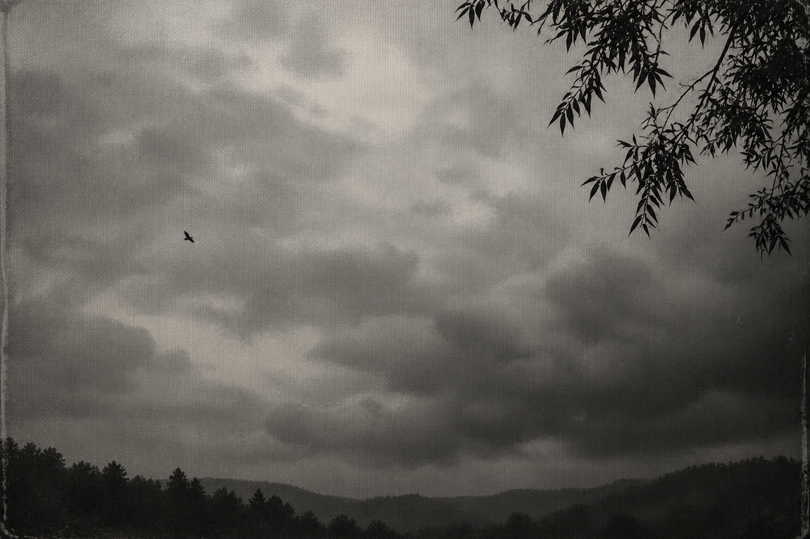
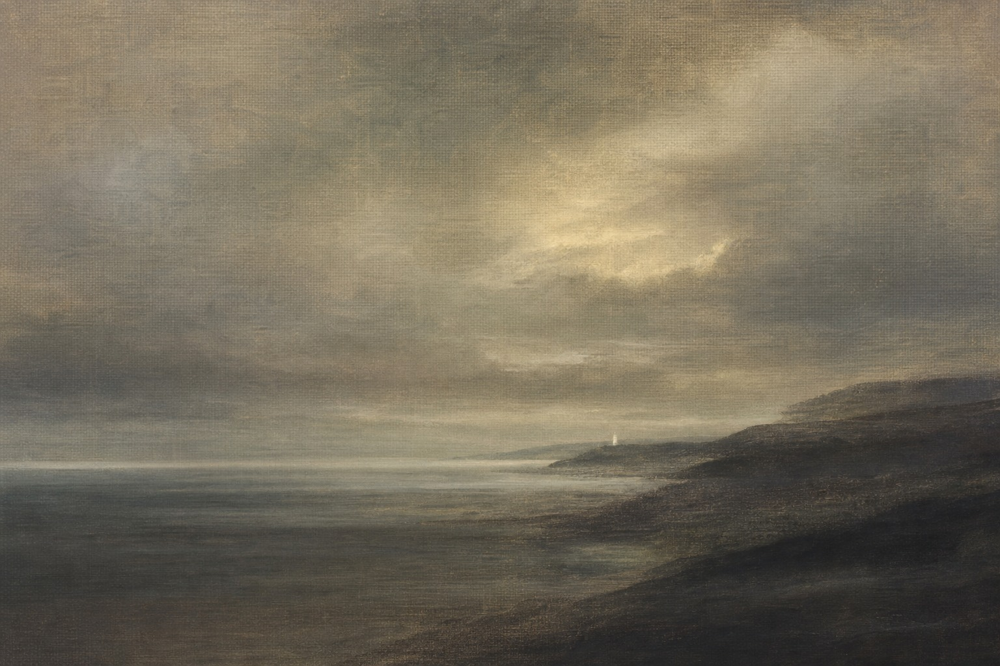
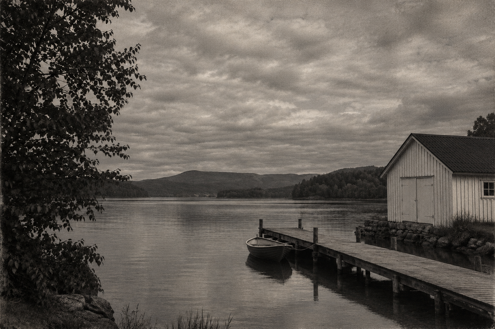

暗幕影像：参考与实测
两张已认可案例校准质感。下面分别展示从零生成，以及用 AI 合成的普通照片式输入做转换。相近的视觉语言不等于像素一致，转换测试也不证明真实照片中的人物和文字能精确保留。
按清晰参考校准的中性灰生成图

默认配方样本：近黑白、细平纹、阴云与剪影。待用户视觉验收。
已认可的 Creative OS 暖灰案例

灰褐海岸、织物表面、雾化层次
植物剪影、暖灰留白、细密织纹
Creative OS 暖灰：从零生成实测
阴云与树冠；湖岸和水面不明显，已记为场景偏差。
中性灰图像转换：并排对照
输入：自然色、白色船屋、木栈桥、红色小船

输出：暗幕色调与织物表面
同位置切换
点击切换原图与转换结果，检查屋顶、窗、栈桥和小船的位置。
实测记录 · 实际提示词 · Skill 源文件